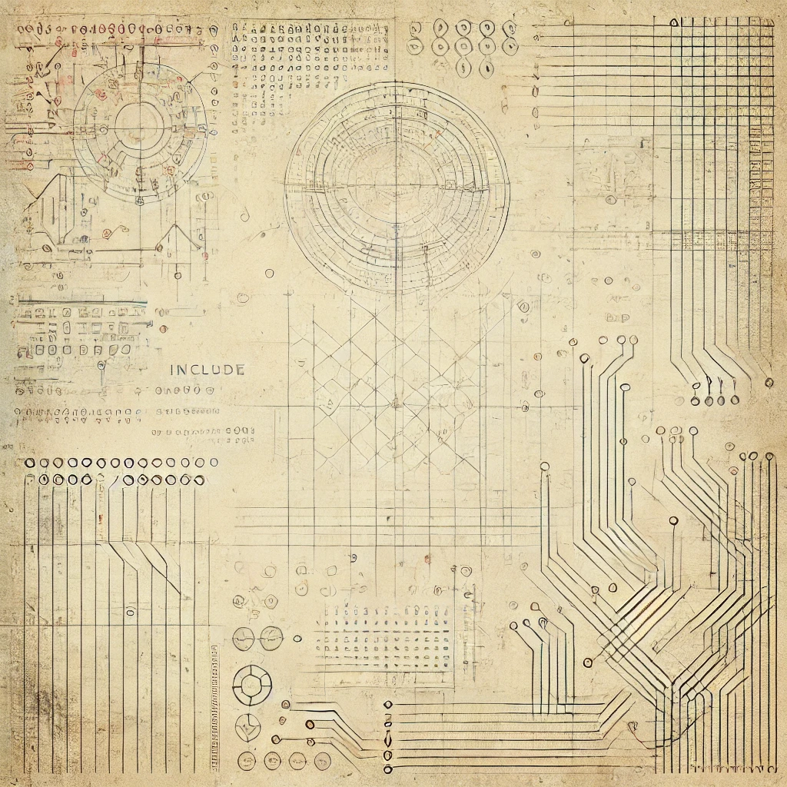
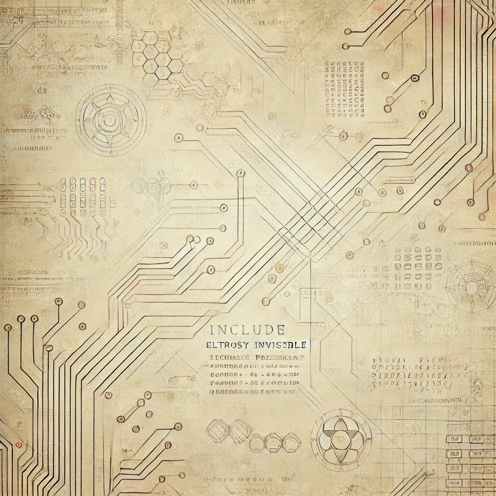

Ein Konzept zur kontrollierten Integration generativer KI in Content- und Medienprozesse,
mit Fokus auf nutzbare Ergebnisse, saubere Workflows und nachvollziehbare Generierung.
Die verlinkten Seiten sind derzeit Dummy-Links und können später durch echte Demo-, Showcase- oder Case-Links ersetzt werden.

ZielSchnellere visuelle und textnahe Content-Produktion
FokusPrompting, Prozesssicherheit und Integration
TechnikAPI-basierte KI-Workflows mit klaren Regeln
Einblicke
Generative Prozesse mit kontrollierbaren Eingaben und klaren Qualitätsschritten.

KI nicht als Gimmick, sondern als eingebetteter Baustein in echten Workflows.
Projektziel
Der Creative AI Visualizer soll kreative Prozesse beschleunigen, ohne die Kontrolle über Qualität,
Stil und konsistente Ergebnisse zu verlieren. Im Vordergrund steht nicht die reine Generierung,
sondern ein praktikabler Workflow für reale Einsätze.
Herausforderung
Generative KI liefert schnell Output, aber nicht automatisch verlässliche Qualität. Ohne klare Regeln entstehen
stilistische Brüche, unvorhersehbare Ergebnisse und zusätzlicher redaktioneller Aufwand.
Kernbestandteile
Strukturierte Prompt-Vorbereitung für wiederholbare Ergebnisse
Anbindung an generative APIs für Bild- oder Content-Erstellung
Vor- und Nachverarbeitung zur Einbettung in bestehende Systeme
Kontrollpunkte für Qualität, Tonalität und Freigabe
Warum das relevant ist
Viele KI-Demos scheitern an fehlender Prozesssicherheit. Dieses Projekt denkt KI nicht als isoliertes Feature,
sondern als verlässlichen Baustein innerhalb bestehender redaktioneller oder marketingnaher Abläufe.
Ergebnis
Das Ergebnis ist ein belastbares Integrationskonzept für generative KI, das Geschwindigkeit und kreative Unterstützung liefert,
ohne Kontrolle, Konsistenz und Anschlussfähigkeit an reale Prozesse zu verlieren.
KI sinnvoll in Prozesse integrieren?
Wenn du nicht nur eine Demo willst, sondern einen belastbaren KI-Workflow mit echtem Nutzen,
kann ich dir helfen, daraus ein sauberes Konzept und eine praktikable Umsetzung zu machen.